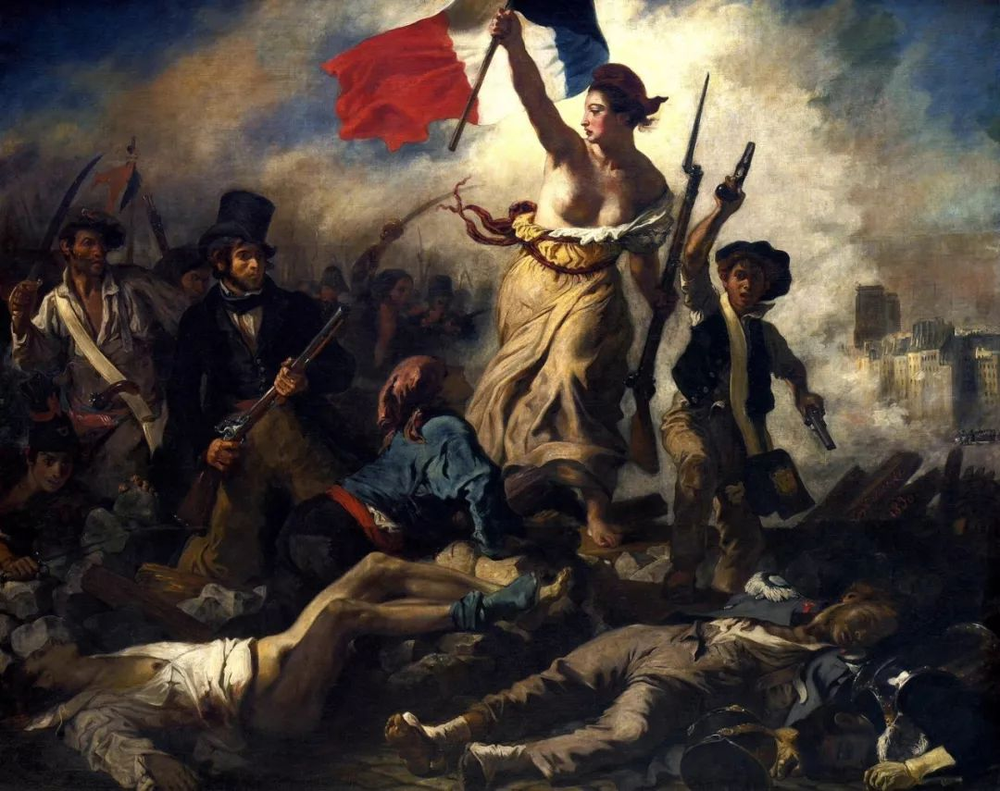

“90后”网络辟谣小分队
原文链接 备份链接 A2N的全称是Anti-2019-nCov，寓意“抗击新型冠状病毒”。 全文2632字，阅读约需5分钟 武汉“90后”互联网创业者杨慧杰决定辟谣是从母亲囤积板蓝根开始的。 疫情暴发后，网上一度流传“喝板蓝根、熏醋可以 …

今天是2月3日，月相为64%的上弦月。
It is February 3 with a 64 percent of First Quarter.
距离满月还有 6 天。
There are 6 days until Full Moon.
文 || 白清扬
只求保佑活着的人。
《上苍保佑吃完了饭的人民》，张楚。
事态发展到了一个令人遗憾的阶段。谣言、恶意与冤冤相报在失去边界的网络世界四散飞扬，将每一个个体的心灵完全包裹在阴影中。
早上醒来，打开手机，朋友圈令人筋疲力尽。昨天，微博从我的手机里消失；朋友圈却是我无法逃离的困局。
突如其来的双黄连风波（我甚至没来得及了解前因后果），为我们生动地刻画了谣言的巨大力量（尤其是，这个谣言最初还有官方的合谋）。武汉红十字会斑斑劣迹的曝光，进一步激怒了民众。这团火一旦燃烧，四处蔓延。过程中必然伴随误伤与错杀：一、对无辜人群与有关人士的谩骂，如将怒火转移到公共知识分子以及许多“民众怀疑的合谋者”身上；二、将怒火转移到美国乃至整个西方资本主义世界身上，声称病毒的传播是他们打击中国的阴谋。
我们大可列举出一批哲学家的大名，挥舞他们在图书馆里沉寂多年而散发出霉味的精装书籍呼吁群众要用“理性”思考；也可以跳出这个怪圈，事不关己高高挂起；更可以带着怜悯的态度嘲弄群众的无知与“土”——就像近日一位名人在微博上做的那样。
然而，在全体恐慌的大背景下，我们很难要求所有个体都用理性思考问题。理性在场的状态下，谣言与阴谋论尚且会在民间流通；在这样一种失去秩序的环境里，我们如何要求谣言、阴谋论与随之而起的恶意得到遏制？
△ “重拳出击”是否是我们对待谣言的最佳方法？
在这种人人自危的环境里，我们很难去苛责个人。毕竟，“造谣”、“传谣”以及“恶意中伤”，是我们能拥有的，仅有的权力了。
在经典作品《叫魂：1768年中国妖术大恐慌》中，知名汉学家孔飞力是这样描述的：[1]
滑动继续阅读↓
“叫魂大恐慌向中国社会的观察者们凸显了一个特别令人难过的现象：社会上到处表现出以冤冤相报为形式的敌意。……在叫魂幽灵的发源地……和尚们为把进香客从与他们竞争的那个寺庙吓跑而欲图挑起人们对妖术的恐惧。更有甚者，他们虚构了一个容易为人们相信的故事……这是一场戏中戏，每一出都用民间的恐惧来做文章……
一旦官府认真发起对妖术的清剿，普通人就有了很好的机会来清算宿怨或谋取私利。这是扔在大街上的上了膛的武器，每个人……都可以取而用之。在这个权力对普通民众来说向来稀缺的社会里，以‘叫魂’罪名来恶意中伤他人成了普通人的一种突然可得的权力……
……在这样一个倍受困扰的社会里，人们会对自己能否通过工作或学习来改善自己的境遇产生怀疑。这种情况由于腐败而不负责任的司法制度而变得更加无法容忍，没有一个平民百姓会指望从这一制度中得到公平的补偿。在这样一个世界里，妖术既是一种权力的幻觉，又是对每个人的一种潜在的权利补偿……”

△ 《叫魂》。
我之所以大段引用《叫魂》的原文，是因为孔飞力的文字在2020年的今天，格外具有现实意义。谣言满天飞是事实；人们对于谣言的狂热是事实；互相攻击、仇视彼此、波及无辜人士（对于罪有应得如湖北红十字会的指责与谩骂不属本文讨论范围）也是事实。
群众对于真相一无所知。他们发不出声音，任何光鲜的、阴暗的，都不会因为他们的声音而改变。任何人都渴望权力。可是，长期以来，群众缺乏它。在这里，我指的绝不仅仅是那些我们一目了然的“权力”——比如一名出生并成长在苏格兰邓迪的农民为“苏格兰从英国独立”投下他自认为庄严的一票。它应该是一种真正的权力，一种作为市民乃至世界公民的庄严权力。它包含作为人的全部尊严，包含其对于理性、知识、情感的完全掌控。他在运用知识、理性以及情感时，是自信的、开心的、充满成就感的。
在我们嘲笑、批判群众散播谣言、彼此攻击时，我们是否需要退一步思考：是什么导致群众需要通过这些途径发出声音？我们每一个人都希望存在。当阳关大道对群众关上大门时，他们才会去悬崖峭壁徒手攀岩。徒手攀岩的确保证了曝光度，他们终于获得了希冀的存在与声音；阳关大道上的人们却说：要打击徒手攀岩，因为它对人们的生命造成严重威胁。
可是，最开始将人们逼上悬崖峭壁的，就是横亘在群众与阳关大道之间的铁闸门。
我们希望群众“启蒙”，脱离轻易相信谣言的蒙昧、仅听一面之词就重拳出击的盲目。然而，“启蒙“究竟是什么？康德说：启蒙是人们用自己的努力摆脱一种“未成年的状态”。这种“未成年”是一种不经过别人指导就无法使用“知性”的无能。如果一个人“未成年”的原因不在于缺乏知性，而在于缺乏不靠指导去使用知性的决心与勇气，这种“未成年”就会导致蒙昧。[2]

△ 到底什么是“启蒙”？意大利思想家安东尼奥·葛兰西（Antonio Gramsci）认为，西方的启蒙运动（The Enlightenment）是西方话语霸权（discourse hegemony）的最大体现之一。
是什么导致群众“缺乏不靠指导去使用知性的决心与勇气”？是什么悬在群众与启蒙中间，成为打开民智的最大障碍？
不要让悬崖峭壁成为群众的唯一去处，正如不要让造谣与恶意中伤他人成为群众仅有的权力。
Footnotes
[1] 孔飞力，《叫魂：1768年中国妖术大恐慌》（上海三联书店，2012），300-1.
[2] 伊曼努尔·康德，《答“何谓启蒙？”之问题》，李明辉译注，《康德历史哲学论文集》（桂林：广西师范大学出版社），23.

抗疫特辑文章
散文 || 八天：从包裹火光的黑夜到黑夜包裹的火光（严已人）
评论/杂文 || 不要让瘟疫成为种族歧视和地域歧视的温床（白清扬）
责任编辑：沙士淳。
排版：白清扬。
封面图：唐颂。
首图：张天鹤、白清扬。
插图来源：
《征信的4个谣言，进来看看》, https://cj.sina.com.cn/articles/view/7317713003/1b42b706b00101qwcf.
三秋书屋, https://www.d4j.cn/7655.html.
Eugène Delacroix, “La Liberté Guidant le Peuple” (1830), https://theculturetrip.com/europe/articles/the-enlightenment-history-of-an-idea/.

纵队队长
长按二维码向我转账
受苹果公司新规定影响，微信 iOS 版的赞赏功能被关闭，可通过二维码转账支持公众号。
文章已于修改
原文链接 备份链接 A2N的全称是Anti-2019-nCov，寓意“抗击新型冠状病毒”。 全文2632字，阅读约需5分钟 武汉“90后”互联网创业者杨慧杰决定辟谣是从母亲囤积板蓝根开始的。 疫情暴发后，网上一度流传“喝板蓝根、熏醋可以 …
原文链接 备份链接 今天是2月2日，月相为53%的上弦月。 It is February 2 with a 53 percent of First Quarter. 距离满月还有 7 天。 There are 7 days until …
原文链接 备份链接 今天是1月31日，月相为35%的上弦月。 It is January 31 with a 35 percent of First Quarter. 距离新月还有 9 天。 There are 9 days until …
原文链接 备份链接 今天是1月29日，月相为19%的峨眉月。 It is January 29 with a 19 percent of Waxing Crescent. 距离满月还有 11 天。 There are 11 days …
原文链接 备份链接 非常时期，武汉成了全国人民挂念、祈福的城市。封城后，武汉人民的真实生活是什么样？ 正和岛自1月26日起特别推出《叶青：我在武汉疫区的第N天》专栏。叶青是一位定居武汉40年的市民，也是一名学者和官员。接下来的一段时间，他 …